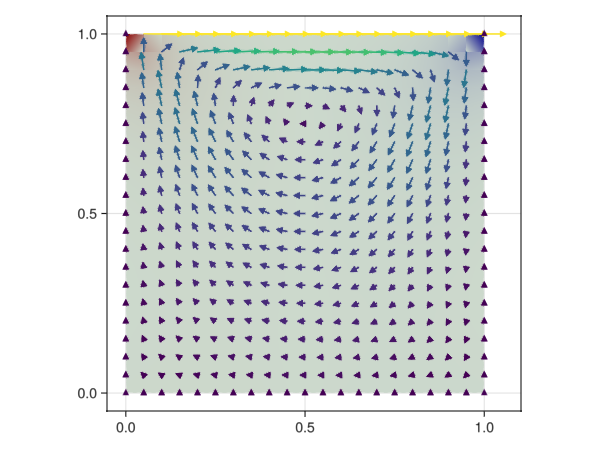

Stokes lid-driven cavity

Problem statement
We solve the lid-driven cavity for a stokes flow. We use an inf-sub stable high order formulation. The velocity is a continuous piecewise multi-linear polynomial of order order and the pressure is a discontinuous piecewise linear polinomyal of order order-1. We constraint the pressure to zero at an arbitrary point of the domain (the last pressure node) to end up with a problem with unique solution.
Implementation
import GalerkinToolkit as GT
import PartitionedSolvers as PS
import GLMakie as Makie
import ForwardDiff
import StaticArrays
import Tensors
using LinearAlgebra
domain = (0,1,0,1)
cells = (20,20)
D = length(cells)
mesh = GT.cartesian_mesh(domain,cells)
Ω = GT.interior(mesh)
Γ1 = GT.boundary(mesh;physical_names=["1-face-2"])
Γ2 = GT.boundary(mesh;physical_names=["1-face-1","1-face-3","1-face-4"])
g1 = GT.analytical_field(x->StaticArrays.SVector(1,0),Ω)
g2 = GT.analytical_field(x->StaticArrays.SVector(0,0),Ω)
g = GT.piecewise_field(g1,g2)
Γ = GT.piecewise_domain(Γ1,Γ2)
order = 2
V = GT.lagrange_space(Ω,order;space_type=:Q,tensor_size=Val((D,)),dirichlet_boundary=Γ)
Q = GT.lagrange_space(Ω,order-1;space_type=:P,dirichlet_boundary=GT.last_dof())
VxQ = V × Q
u_field, p_field = 1,2
uhph_dirichlet = GT.dirichlet_field(Float64,VxQ)
uhd = GT.field(uhph_dirichlet,u_field)
GT.interpolate_dirichlet!(g,uhd)
dΩ = GT.measure(Ω,2*order)
∇ = ForwardDiff.jacobian
div(u,x) = tr(∇(u,x))
a((u,p),(v,q)) = GT.∫( x-> ∇(v,x)⋅∇(u,x) - div(v,x)*p(x) + q(x)*div(u,x), dΩ)
l((v,q)) = 0
p = GT.linear_problem(uhph_dirichlet,a,l)
s = PS.LinearAlgebra_lu(p)
s = PS.solve(s)
uh,ph = GT.solution_field(uhph_dirichlet,s)
axis = (aspect = Makie.DataAspect(),)
Makie.plot(Ω;color=ph,axis)
Makie.arrows!(uh;color=x->norm(uh(x)),lengthscale=0.1)This page was generated using Literate.jl.